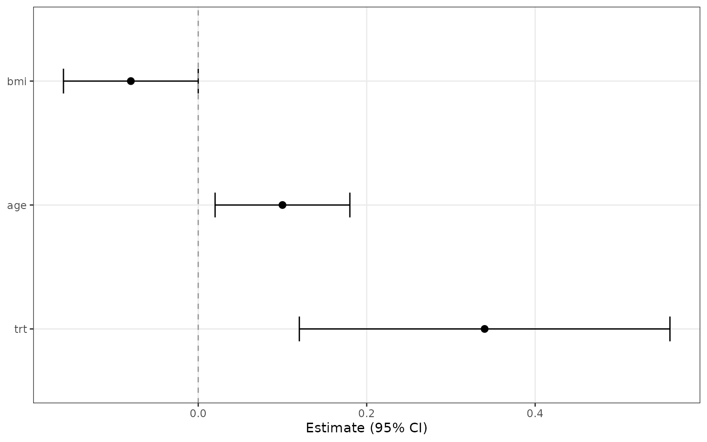
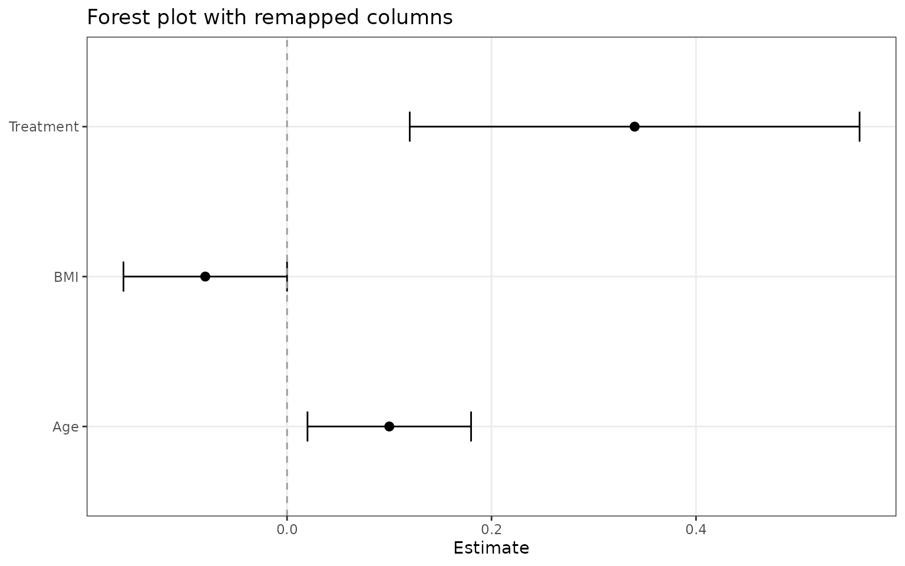
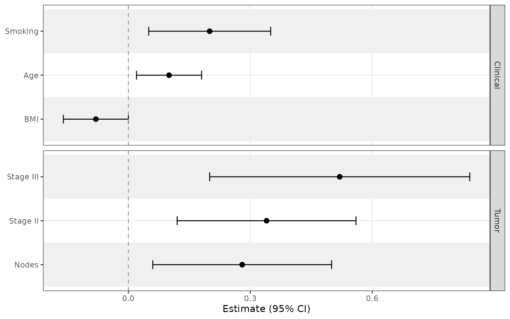
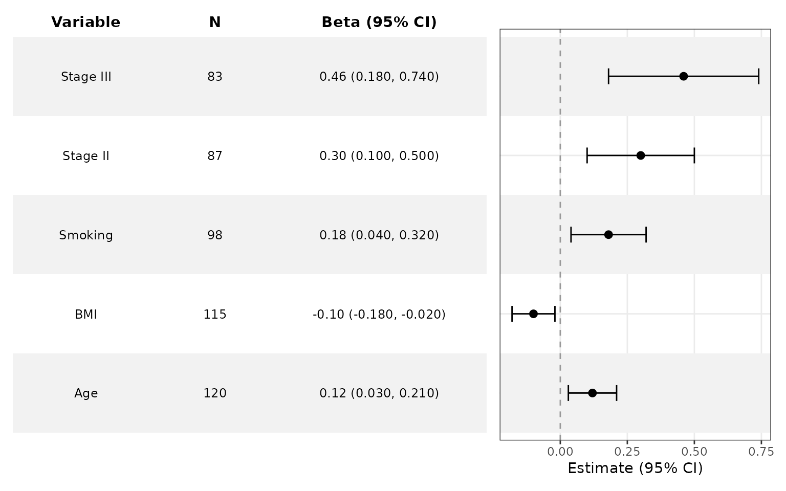
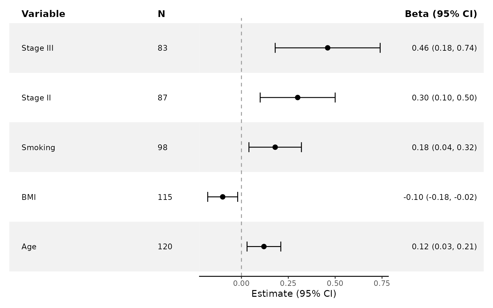
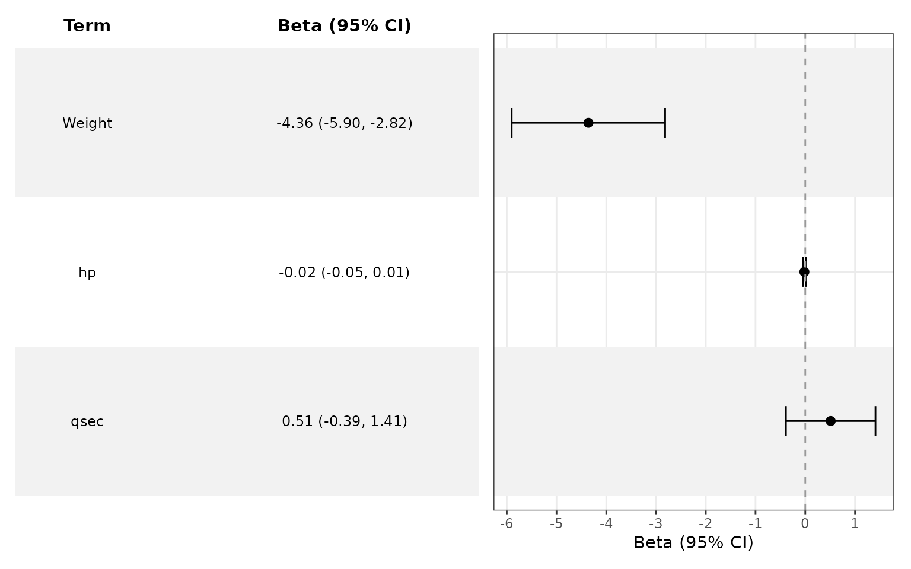

Get Started with ggforestplotR
Source:vignettes/ggforestplotR-get-started.Rmd
ggforestplotR-get-started.RmdggforestplotR is built for coefficient-driven forest
plots that stay inside a normal ggplot2 workflow.
Choose a workflow
Use the package in one of three ways:
- Start from a coefficient table and map the required columns directly.
- Start from a fitted model and let
tidy_forest_model()orggforestplot()callbroom::tidy(). - Add
add_forest_table()oradd_split_table()after styling the main plot.
This article covers the basic entry points and the minimum data you need.
Start from a coefficient table
The simplest input is a data frame with a term, estimate, and confidence limits.
basic_coefs <- data.frame(
term = c("Age", "BMI", "Treatment"),
estimate = c(0.10, -0.08, 0.34),
conf.low = c(0.02, -0.16, 0.12),
conf.high = c(0.18, 0.00, 0.56)
)
ggforestplot(basic_coefs) +
ggplot2::labs(title = "Basic forest plot")
If your columns use different names, map them explicitly.
renamed_coefs <- data.frame(
variable = c("Age", "BMI", "Treatment"),
beta = c(0.10, -0.08, 0.34),
lower = c(0.02, -0.16, 0.12),
upper = c(0.18, 0.00, 0.56)
)
ggforestplot(
renamed_coefs,
term = "variable",
estimate = "beta",
conf.low = "lower",
conf.high = "upper"
) +
ggplot2::labs(title = "Forest plot with remapped columns")
Add grouped sections and row striping
Use grouping when you want related variables separated
into labeled panels. Add striped_rows = TRUE when a larger
display benefits from clearer row tracking.
sectioned_coefs <- data.frame(
term = c("Age", "BMI", "Smoking", "Stage II", "Stage III", "Nodes"),
estimate = c(0.10, -0.08, 0.20, 0.34, 0.52, 0.28),
conf.low = c(0.02, -0.16, 0.05, 0.12, 0.20, 0.06),
conf.high = c(0.18, 0.00, 0.35, 0.56, 0.84, 0.50),
section = c("Clinical", "Clinical", "Clinical", "Tumor", "Tumor", "Tumor")
)
ggforestplot(
sectioned_coefs,
grouping = "section",
striped_rows = TRUE,
stripe_fill = "grey94"
) +
ggplot2::labs(title = "Grouped forest plot with striped rows")
Add a side table
Use add_forest_table() after you finish the main
ggplot2 styling.
tabled_coefs <- data.frame(
term = c("Age", "BMI", "Smoking", "Stage II", "Stage III"),
estimate = c(0.12, -0.10, 0.18, 0.30, 0.46),
conf.low = c(0.03, -0.18, 0.04, 0.10, 0.18),
conf.high = c(0.21, -0.02, 0.32, 0.50, 0.74),
sample_size = c(120, 115, 98, 87, 83)
)
ggforestplot(tabled_coefs, n = "sample_size", striped_rows = TRUE) +
ggplot2::labs(title = "Forest plot with a left-side summary table") +
add_forest_table(
position = "left",
show_n = TRUE,
estimate_label = "Beta"
)
Add split tables
Use add_split_table() when the term columns should stay
on the left and the summary statistics should move to the right.
ggforestplot(tabled_coefs, n = "sample_size") +
ggplot2::labs(title = "Forest plot with split tables") +
add_split_table(
left_columns = c("term", "n"),
right_columns = c("estimate")
)
Start from a fitted model
If broom is installed, ggforestplot() can
work directly from a fitted model.
fit <- lm(mpg ~ wt + hp + qsec, data = mtcars)
ggforestplot(fit, sort_terms = "descending") +
ggplot2::labs(title = "Forest plot directly from an lm() object")
Next articles
For more detail, see:
-
ggforestplotR-plot-customizationfor styling, separators, and table layouts. -
ggforestplotR-data-helpersforas_forest_data()andtidy_forest_model().